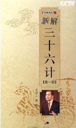

百家讲坛 王立群读《史记》汉武帝
介绍：
激发起王立群对古代文学狂热的是《史记》，留校任教后他讲授的汉魏六朝文学中有《史记》，在《百家讲坛》他面向全国观众讲述的仍是《史记》――从来没有一本书能够像《史记》一样，对王立群产生了如此深远的影响。

百家讲坛 慈禧_下部
介绍：
随着一声婴儿的啼哭，一个女人来到了这个世界上，她就是慈禧，晚清最高权力统治者，从17岁选秀入宫到朝纲专制的皇太后，她何以在男人统治的世界里夺得最高权力，在后宫嫔妃血腥的争斗中，她又是怎么走向皇太后宝座的呢？
百家讲坛 慈禧陵寝之谜
介绍：
穷奢极欲的慈禧，修建陵寝究竟耗费了多少黄金？死后的陪葬珍宝到底有多少？东陵大盗案究竟如何发生的？被盗珠宝流向何方？赵英健为您揭开。

百家讲坛 于丹《庄子》心得
介绍：
于丹为观众讲述的就是这样的孔子，一位链接了多彩世界的灰色孔子。链接是广泛的，东西南北，古今中外。主题却是单纯的，单纯到没有色彩，没有性别，没有时间和空间，只有温度。以白话诠释经典，以经典诠释智慧，以智慧诠释人生，以人生诠释人性，以人性安顿人心，体悟经典的普适智慧。

百家讲坛 玄奘西游记
介绍：
唐僧师徒四人上西天取经的故事几乎人人都知道，但与孙悟空、猪八戒、沙僧这三个徒弟不同的是，唐僧在历史上确有其人，他是唐朝时一个伟大的僧人，号称玄奘法师。他徒步十多万公里，历时十七年，远赴印度取经。玄奘的西行之路...

百家讲坛 红旗渠的故事
介绍：
那是一段令人难以想象的岁月，那是一群令人难以忘怀的人们。上个世纪的六十年代，河南省林县的几十万百姓，为了解决困扰了他们祖祖辈辈的吃水难问题，硬是靠着一双双手，凭着自己的血肉之躯，在太行山深处的悬崖峭壁上，开凿出了一条全长1500公里的人工天河...
百家讲坛 我心目中的陈嘉庚
介绍：
陈嘉庚，一位爱国华侨，十七岁跟随父亲下南洋经商，他靠着自己的精明睿智成为名震南洋的实业家。陈嘉庚致富后不忘苦难中的祖国，他把资金全部倾注于教育事业。就在陈嘉庚兴办学校，以尽天职时，1937年抗日战争爆发，祖国的大片江山落入敌手，一时间国土沦丧，神州危在旦夕...

百家讲坛 唐史系列02_贞观之治
介绍：

百家讲坛 我读经典
介绍：
介绍：2007年，中央电视台科教频道推出了大型媒体行动《中国记忆D文化遗产博览月》。除“5・18国际博物馆日大型直播”、“6・09中国文化遗产日大型直播”外，《百家讲坛》栏目也参加了这一行动，并推出了汇集名家思想、感悟经典文化的《我读经典》系列节目...

百家讲坛 新解三十六计
介绍：
百家讲坛 杨子荣
介绍：
一位屡立奇功的侦察英雄，一位舍生忘死的无畏战士。杨子荣，从面朝黄土背朝天的农民，到浴血疆场、奋勇杀敌的革命战士，他到底经历了怎样的抉择历程？而他智取威虎山.活捉座山雕的传奇故事，在历史上究竟是如何发生的...

百家讲坛 范蠡
介绍：
范蠡（前536-前448年），字少伯，春秋末期的政治家、军事家和经济学家。楚国宛（今河南南阳）人。著作有《计然篇》、《陶朱公生意经》等。

百家讲坛 焦裕禄
介绍：
焦裕禄，兰考县原县委书记。1962年，40岁的焦裕禄上任后，立志改变兰考县内涝、风沙、盐碱的恶劣环境。他不顾已患有肝病的身体，带领群众种泡桐、锁风沙；挖泄洪渠，制洪水；深翻土地，改造农田。1964年5月14日，肝癌夺去了焦裕禄年仅42岁的生命。
百家讲坛 传奇紫砂壶
介绍：
百家讲坛 李清照
介绍：

百家讲坛 武则天
介绍：
这是一个大气磅礴的王朝，这是空前绝后的一代女皇。她颠覆了大唐，却又亲手缔造了大唐的强盛；她改写了天命，最终却又不得不向命运妥协。一千三百多年来，她是历史，也是传奇。武则天究竟是一个什么样的女人？她的成功之路从哪里起步...